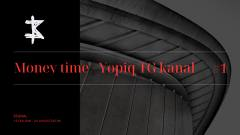

MTTreyding va moliyaviy signallar bilan ishlash bo'yicha qo'llanma.
Ushbu qo'llanma treyding sohasida barqaror daromad olish va signallar bilan ishlash tartiblarini tushuntiradi. Mualliflar o'zlarining ish modellari, risklarni boshqarish va bozor tahlili bo'yicha yondashuvlarini bayon etishadi.